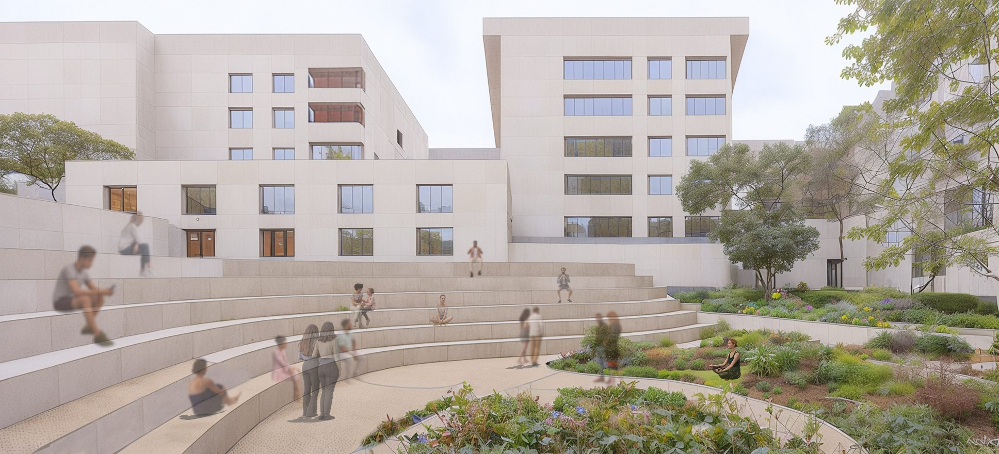
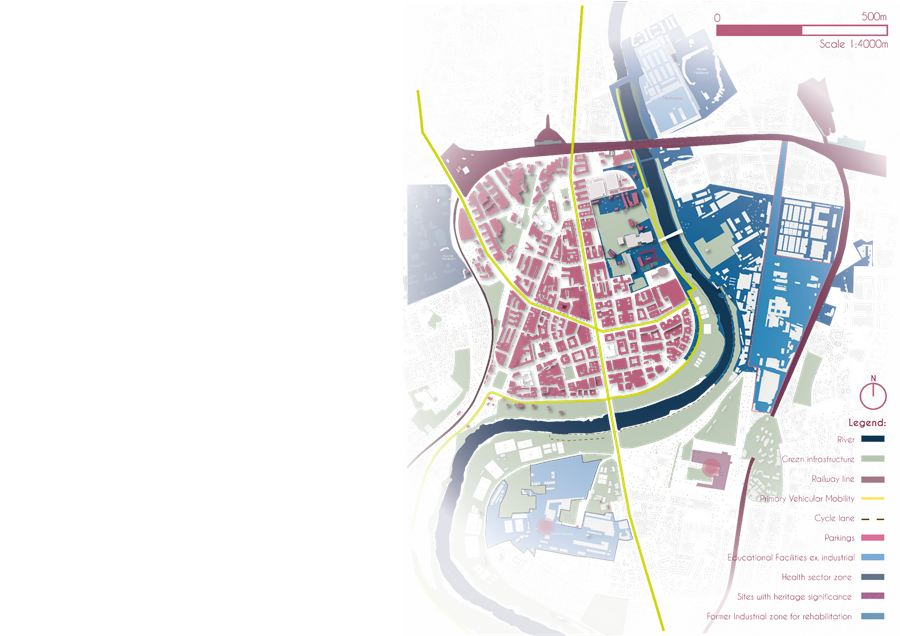
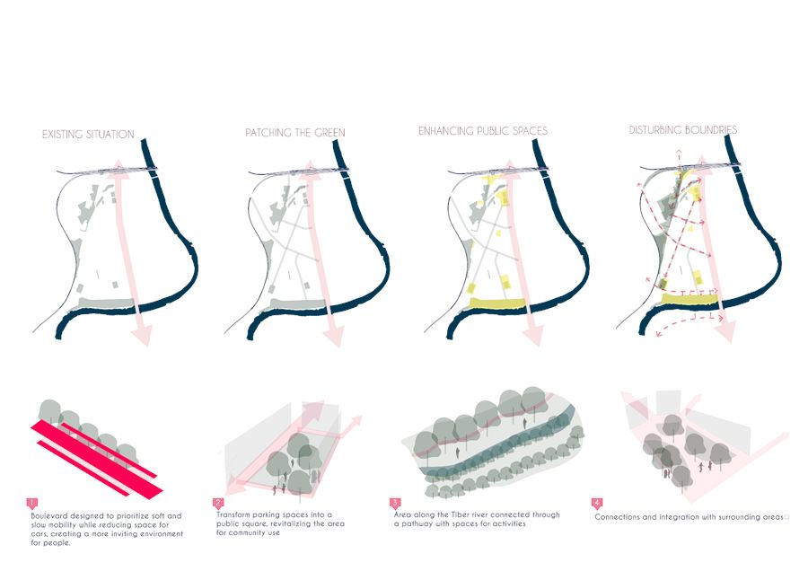
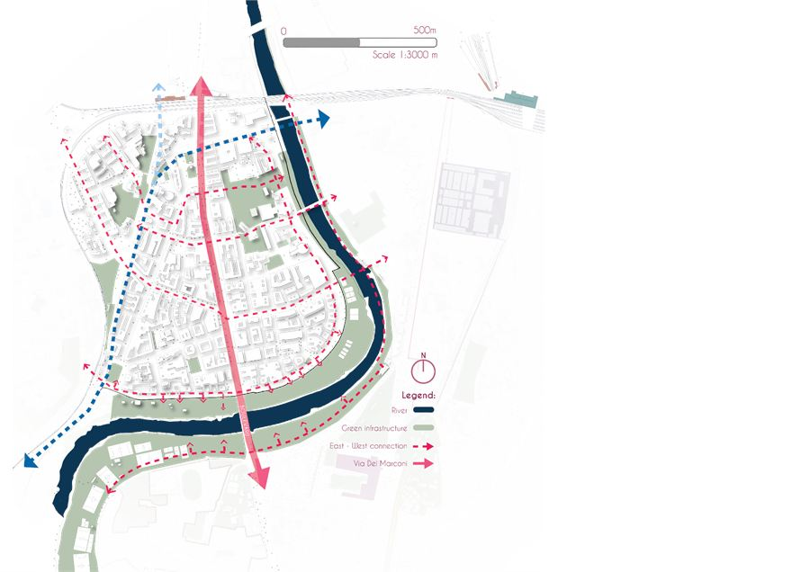
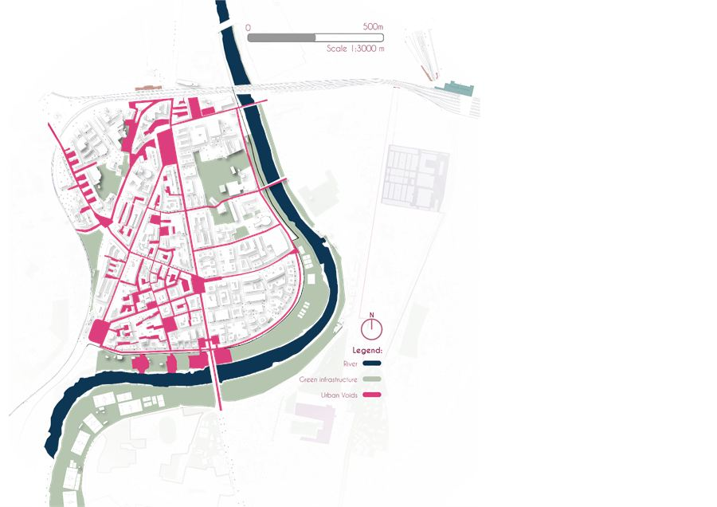
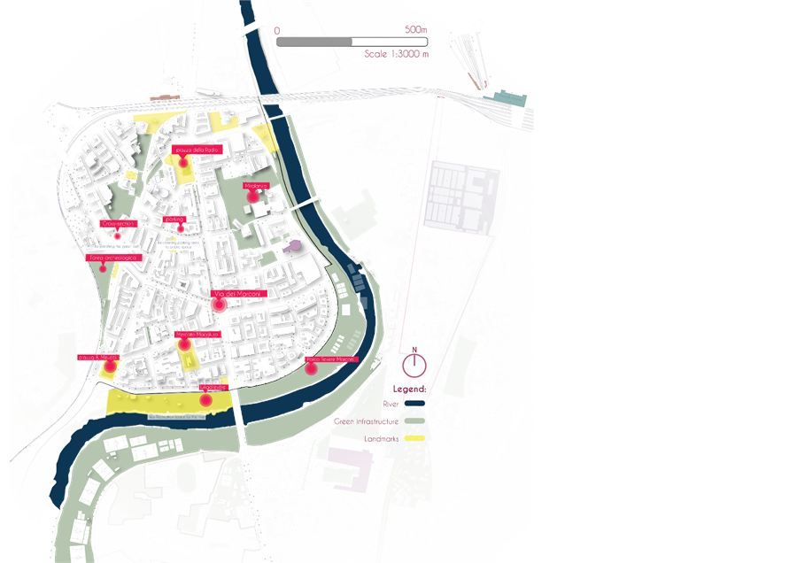
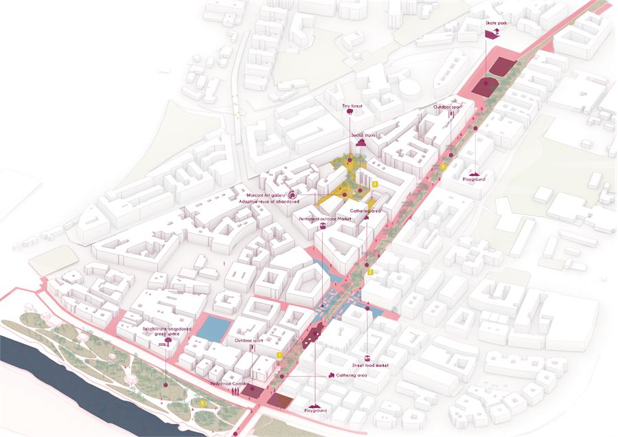
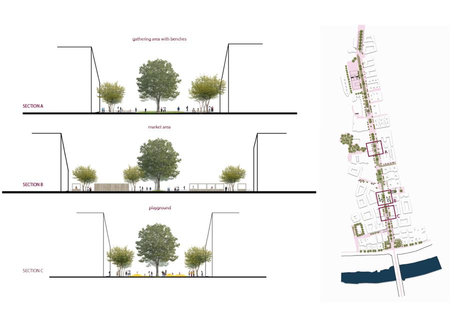
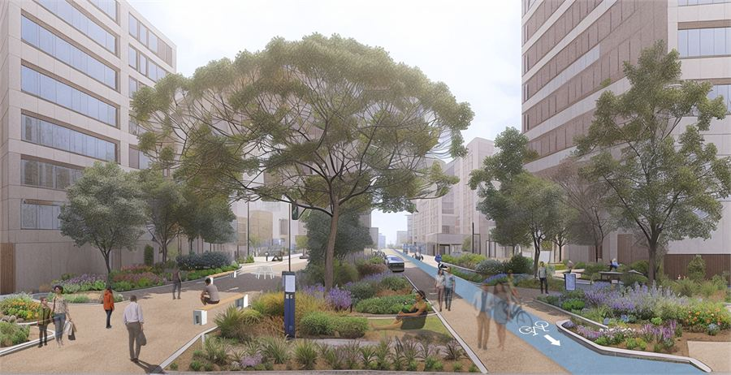
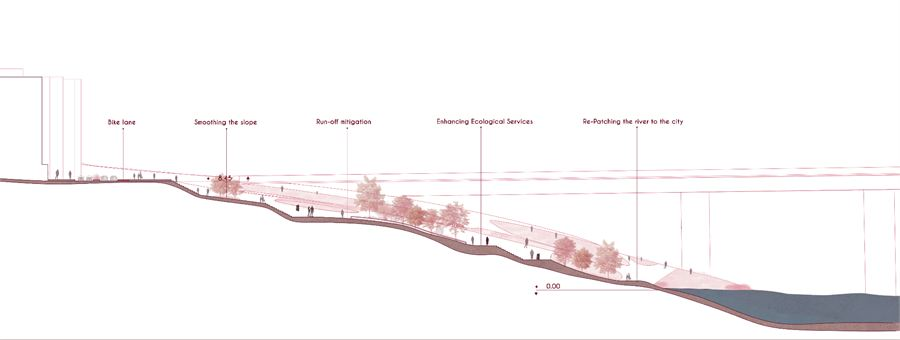

Viale Marconi
Turning a traffic axis back into the neighbourhood's public room, and giving the district its river back.

title Il Polmone
Viale Marconi is the main axis running through the urban fabric of a dense, post-industrial quarter of Rome. Developed under the title Il Polmone — the lung — the proposal reads the boulevard as a trunk from which green branches into the block interiors, so that a single linear intervention becomes a system reaching the whole neighbourhood: more public space, less vehicular traffic, and higher biodiversity across the site.
Context
The district has real assets: proximity to the historical centre, a well-connected railway, and post-industrial land available for rehabilitation. It also has a clear set of problems — dependency on the car, a highly urbanised and highly polluted fabric, a lost connection with the river, and public space of poor quality.

Strategy — re-patch, re-adapt
Four moves, read left to right: the existing situation; patching the green across the east–west grain; enhancing public space along the axis; and blurring the boundary between street and block interior. Mapped onto the district, that means patching east–west connectivity, reclaiming access between city and river, advocating slow and soft mobility, and re-adapting the under-valorised areas the fabric has left over.




The boulevard
Along its length the section changes: gathering space, market, and playground, each cut differently to suit what happens there. The carriageway narrows, the planting widens, and the pavement becomes 50% permeable — recycled brick and clay laid in an irregular, layered pattern.



River park
The green riverbank is repurposed for the inhabitants of the area, and the section works the level change from street down to the Tiber. Planting is drawn from species already native to the region — cork and holm oak, Turkey oak, field maple, elm, hackberry, with laurel, tree heath, fig and wild pear in the understorey.
